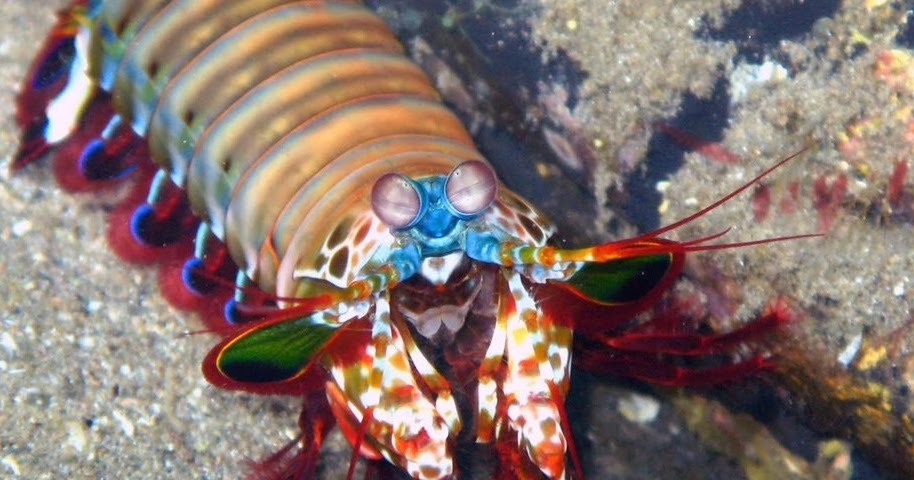

Fatos sobre o Stomatopoda

Dados cientificos
O Stomatopoda(ou Odontodactylus scyllarus) são predadores ativos que caçam presas com o auxílio
de um sentido de visão muito apurado e capaz de interpretar polarização no espectro ultravioleta e
infravermelho.
Classificação cientifica:
- Reino: Animalia
- Filo: Arthropoda
- Subfilo: Crustacea
- Classe: Malacostraca
- Subclasse: Hoplocarida
- Ordem: Stomatopoda
Agressividade
O Stomatopoda é considerado muito agressivo e forte, sendo este um dos motivos para os áquarios geralmente não os terem, afinal, com sua capacidade e personalidade, eles são conhecidos por matarem outros animais, e matariam todos os que estivessem no mesmo tanque que eles.
Além disso, sua força é tanto que ele poderia até mesmo quebrar os vidros do áquario!
